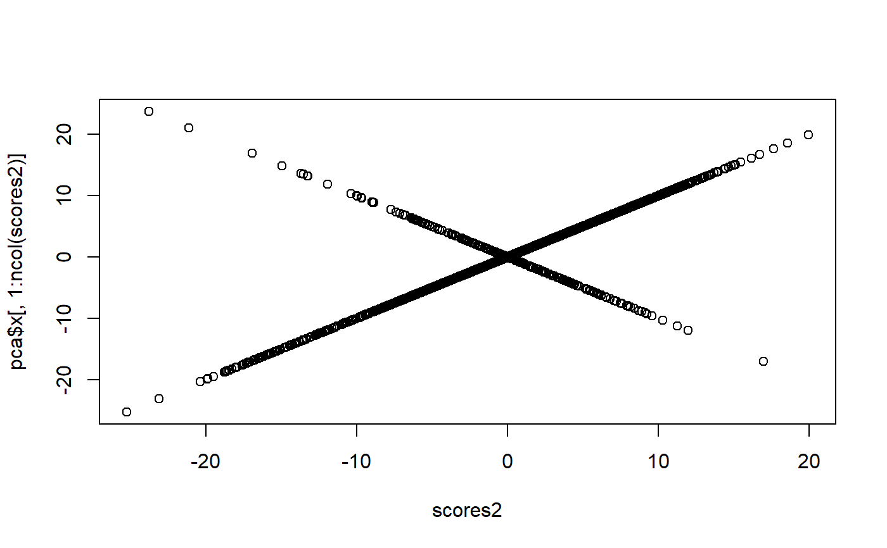
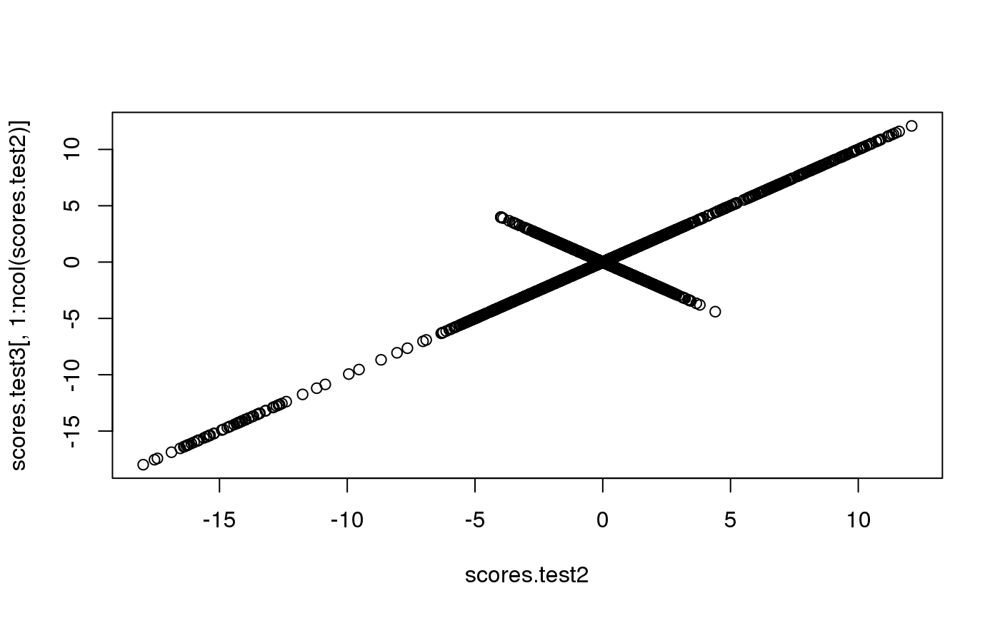

big_SVD.RdAn algorithm for partial SVD (or PCA) of a Filebacked Big Matrix through the eigen decomposition of the covariance between variables (primal) or observations (dual). Use this algorithm only if there is one dimension that is much smaller than the other. Otherwise use big_randomSVD.
big_SVD(X, fun.scaling = big_scale(center = FALSE, scale = FALSE), ind.row = rows_along(X), ind.col = cols_along(X), k = 10, block.size = block_size(nrow(X)))
| X | A FBM. |
|---|---|
| fun.scaling | A function that returns a named list of
|
| ind.row | An optional vector of the row indices that are used. If not specified, all rows are used. Don't use negative indices. |
| ind.col | An optional vector of the column indices that are used. If not specified, all columns are used. Don't use negative indices. |
| k | Number of singular vectors/values to compute. Default is |
| block.size | Maximum number of columns read at once. Default uses block_size. |
A named list (an S3 class "big_SVD") of
d, the singular values,
u, the left singular vectors,
v, the right singular vectors,
center, the centering vector,
scale, the scaling vector.
Note that to obtain the Principal Components, you must use predict on the result. See examples.
To get \(X = U \cdot D \cdot V^T\),
if the number of observations is small, this function computes \(K_(2) = X \cdot X^T \approx U \cdot D^2 \cdot U^T\) and then \(V = X^T \cdot U \cdot D^{-1}\),
if the number of variable is small, this function computes \(K_(1) = X^T \cdot X \approx V \cdot D^2 \cdot V^T\) and then \(U = X \cdot V \cdot D^{-1}\),
if both dimensions are large, use big_randomSVD instead.
set.seed(1) X <- big_attachExtdata() n <- nrow(X) # Using only half of the data ind <- sort(sample(n, n/2)) test <- big_SVD(X, fun.scaling = big_scale(), ind.row = ind)#> (2)str(test)#> List of 5 #> $ d : num [1:10] 172.5 117.6 89.6 87.5 87.2 ... #> $ u : num [1:258, 1:10] -0.1015 -0.0914 -0.0951 -0.0798 -0.0901 ... #> $ v : num [1:4542, 1:10] 0.00304 -0.00274 0.02779 -0.01381 0.00599 ... #> $ center: num [1:4542] 1.32 1.6 1.56 1.69 1.05 ... #> $ scale : num [1:4542] 0.684 0.572 0.616 0.511 0.692 ... #> - attr(*, "class")= chr "big_SVD"plot(test$u)pca <- prcomp(X[ind, ], center = TRUE, scale. = TRUE) # same scaling all.equal(test$center, pca$center)#> [1] TRUEall.equal(test$scale, pca$scale)#> [1] TRUE# scores and loadings are the same or opposite # except for last eigenvalue which is equal to 0 # due to centering of columns scores <- test$u %*% diag(test$d) class(test)#> [1] "big_SVD"scores2 <- predict(test) # use this function to predict scores all.equal(scores, scores2)#> [1] TRUEdim(scores)#> [1] 258 10dim(pca$x)#> [1] 258 258tail(pca$sdev)#> [1] 3.037803e+00 3.014497e+00 2.977890e+00 2.953051e+00 2.877736e+00 #> [6] 7.585073e-15plot(scores2, pca$x[, 1:ncol(scores2)])plot(test$v[1:100, ], pca$rotation[1:100, 1:ncol(scores2)])# projecting on new data X2 <- sweep(sweep(X[-ind, ], 2, test$center, '-'), 2, test$scale, '/') scores.test <- X2 %*% test$v ind2 <- setdiff(rows_along(X), ind) scores.test2 <- predict(test, X, ind.row = ind2) # use this all.equal(scores.test, scores.test2)#> [1] TRUEscores.test3 <- predict(pca, X[-ind, ]) plot(scores.test2, scores.test3[, 1:ncol(scores.test2)])